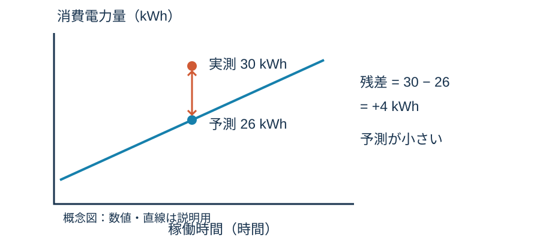
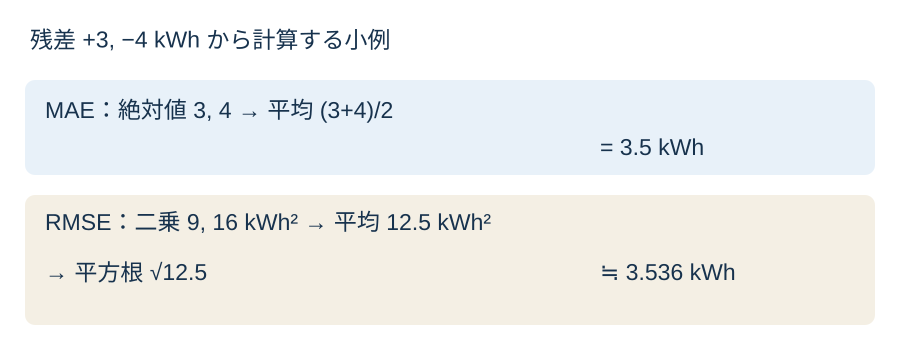
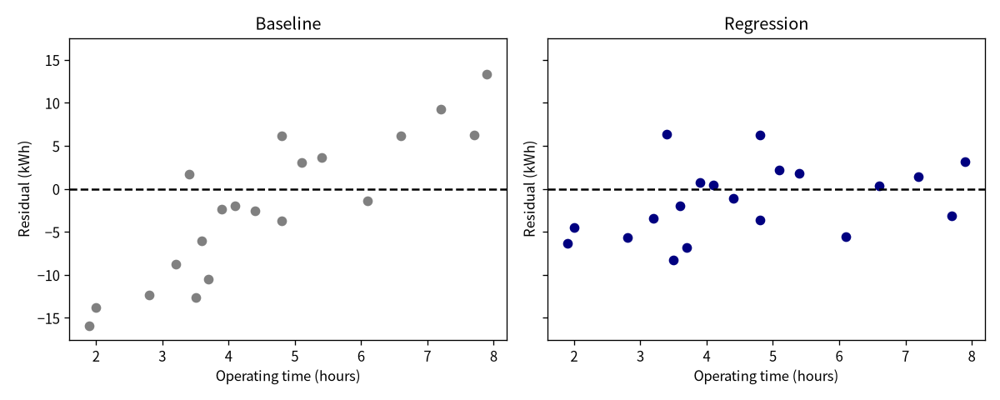
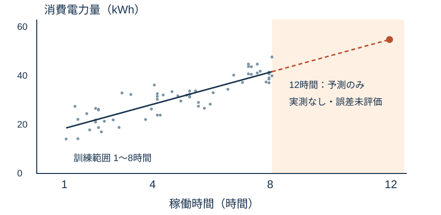

単回帰分析2
0〜10分：準備・復習
予想 → 評価対象の変更 → 独立照合 → 説明
復習：本文§2から第8・9回へ。
| 役割 | 行数 | 今回の扱い |
|---|---|---|
| 訓練 | 60 | 平均と直線を決める |
| 検証 | 20 | 学習後の誤差を調べる |
| 最終確認 | 20 | 教員が保持 |
検証行へ変えると、誤差はどう変わる？
残差 = 実測値 − 予測値
10〜25分：本文§3〜4


25〜50分：両言語の主例、本文§5〜6
描画ひな形の説明：本文§7

完成例：両パネルの縦軸尺度は共通。
E004・E005・E011について：
係数を途中で丸めない。
| ID | 予測kWh（概数） | 残差kWh（概数） |
|---|---|---|
| E004 | 27.51299 | −6.79299 |
| E005 | 31.13182 | +6.28818 |
| E011 | 27.18400 | −2.00400 |
正負は過小／過大予測を表す。
| 対象 | モデル | MAE | RMSE |
|---|---|---|---|
| 訓練60 | 平均 | 6.8092 | 8.2781 |
| 訓練60 | 回帰 | 3.2914 | 3.9443 |
| 検証20 | 平均 | 7.0862 | 8.4193 |
| 検証20 | 回帰 | 3.6599 | 4.3567 |
単位はすべてkWh。

70〜80分：照合・外挿
80〜90分：提出・質問
処理量も使うと、予測はどう変わる？